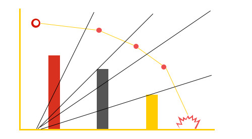

 <section class="track_trace1">
   <div class="row">
     <div class="col-md-4 col-sm-4 col-xs-12 col-lg-6  col-md-push-3">
       <div class="cont_align">
         <h1 class="text_center">Predictive Maintenance</h1>

         <p class="wht_isIOT text_center">Our Predictive Maintenance collects relevant information from the smart
           sensors
           or motors
           attached to the in-service equipment i.e. noise, vibration and temperature sensing to help you determine
           when maintenance should be performed, allowing convenient scheduling of corrective maintenance, and
           preventing unexpected equipment failures.

           <br><br>Planned application on the IoT Platform is EXP Sorting System Predictive Maintenance.


         </p>
       </div>
     </div>
     <div class="col-md-4 col-sm-4 col-xs-12  col-lg-6 col-md-push-3 clr_both">
       <div></div>
     </div>

   </div>


 </section>
